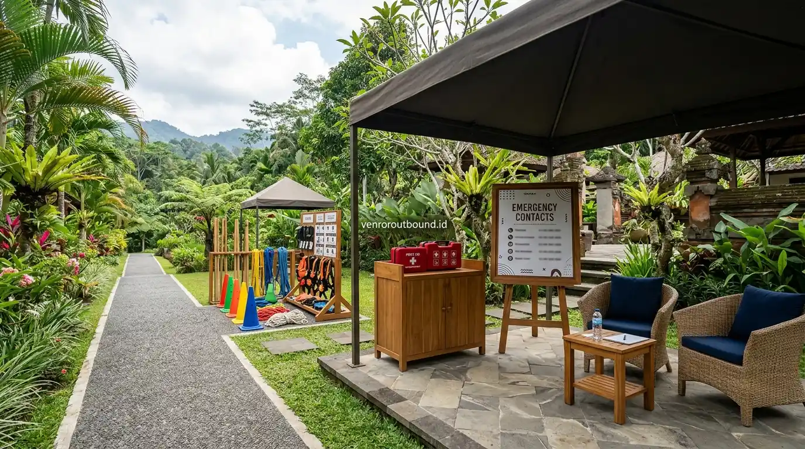

1. Mengapa Pemilihan Lokasi Outbound Harus Ramah dan Inklusif?
Jawaban singkat: Lokasi outbound yang baik perlu mempertimbangkan kondisi seluruh peserta, bukan hanya daya tarik pemandangan alam. Prioritaskan sanitasi yang higienis, area teduh terlindung dari cuaca ekstrem, akses jalur yang aman, variasi permainan outbound seru yang fleksibel, serta kesiapan akses medis darurat.
Bagi panitia outbound perusahaan dan tim HR, memilih lokasi kegiatan luar ruang kerap kali terjebak pada penilaian estetika foto semata. Hamparan rumput berlatar tebing atau perbukitan memang terlihat indah di proposal, namun dapat menimbulkan kendala serius jika tidak didukung fasilitas dasar yang memadai bagi kenyamanan karyawan wanita, peserta dengan stamina terbatas, maupun rekan kerja yang sedang hamil.
Kegiatan kebersamaan kantor sejatinya bertujuan untuk mempererat hubungan antarkaryawan (*employee engagement*). Oleh karena itu, rasa aman dan kenyamanan fisik merupakan prasyarat mutlak agar setiap peserta dapat berpartisipasi dengan antusias tanpa rasa cemas.

Layanan Outbound Profesional vs Kelola Mandiri: Mana Lebih Efisien?
Analisis komparasi beban jam kerja panitia internal, legalitas, dan efisiensi anggaran korporat.
2. Kriteria 1: Kebersihan Sanitasi dan Rasio Toilet yang Memadai
Fasilitas sanitasi adalah indikator vital kenyamanan peserta dalam acara yang berlangsung seharian penuh. Poin-poin penting yang harus diverifikasi saat survei meliputi:
- Rasio Toilet Wanita: Sediakan minimal 1 bilik toilet bersih untuk setiap 15–20 peserta perempuan guna mencegah antrean panjang yang mengganggu jadwal acara.
- Kelancaran Air Bersih: Pastikan pasokan air bersih mengalir deras dan penampungan air bebas dari jentik atau endapan kotor.
- Pemisahan dan Privasi: Area toilet pria dan wanita harus terpisah dengan pintu yang terkunci sempurna, ventilasi udara baik, dan penerangan terang.
- Jarak Tempuh: Jarak dari lapangan aktivitas utama menuju toilet tidak lebih dari 2–3 menit berjalan kaki di jalur yang aman.
3. Kriteria 2: Ketersediaan Area Berteduh & Perlindungan Cuaca
Paparan terik matahari langsung di dataran terbuka dalam waktu lama dapat menyebabkan dehidrasi dan heat exhaustion. Lokasi yang baik wajib memiliki:
- Gazebo atau Pendopo Teduh: Ruang semi-terbuka yang nyaman untuk tempat duduk peserta saat jeda antarsesi permainan.
- Aula Indoor Serbaguna (Plan B): Antisipasi cuaca hujan di kawasan pegunungan agar simulasi dapat dipindahkan ke dalam ruangan tanpa harus membatalkan kegiatan.
- Water Station Terjangkau: Titik pengisian air mineral yang tersebar di area teduh agar hidrasi peserta selalu terjaga.

Pos pertolongan pertama lapangan dan area peristirahatan teduh yang disiapkan untuk mendukung keselamatan peserta.
4. Kriteria 3: Kontur Medan, Tangga, dan Aksesibilitas Jalur
Kondisi kontur tanah sangat berpengaruh terhadap potensi risiko cedera pergelangan kaki atau terpeleset:
- Kualitas Permukaan Lapangan: Lapangan rumput yang terawat rata, tidak bergelombang tajam, dan bebas dari batu tajam atau pecahan kaca.
- Keamanan Tangga dan Tanjakan: Jika venue bertingkat, tangga wajib memiliki pegangan tangan (*handrail*) yang kokoh dan anak tangga anti-slip.
- Akses Kendaraan ke Area Utama: Bus atau mobil penjemput dapat parkir dekat dengan lokasi utama sehingga peserta tidak perlu berjalan mendaki terlalu jauh membawa barang pribadi.

Vendor Outbound Perusahaan di Batu Malang: Pilihan Venue & Fasilitas
Ulasan lokasi pegunungan asri di Jawa Timur yang cocok untuk corporate gathering dan leadership camp.
5. Kriteria 4: Variasi Permainan Outbound Seru yang Fleksibel
Aktivitas kebersamaan yang efektif tidak harus selalu mengandalkan tantangan fisik ekstrem. Permainan outbound seru dapat dirancang secara fleksibel dan ramah bagi berbagai tingkatan stamina melalui modul kolaboratif:
- Collaborative Logic & Puzzle Games: Permainan strategi menyusun balok, estafet teka-teki, atau simulasi peta rute yang mengasah kekompakan tim tanpa menuntut lari cepat.
- Communication & Ice Breaking: Games interaktif berbasis dialog, tebak kata, dan gerakan ritmik ringan yang mencairkan suasana dengan tawa gembira.
- Creative Challenges: Pembuatan yel-yel tim, skenario drama mini perusahaan, atau simulasi perancangan produk kreatif di bawah tenda.
6. Kriteria 5: Kesiapan P3K, Prosedur Darurat, dan Akses Faskes
Meskipun aktivitas dirancang dengan tingkat risiko rendah, kesiapsiagaan medis darurat tetap merupakan standar operasional yang wajib ada:
- Kotak P3K Standar Lengkap: Obat luka, perban elastis, antiseptik, kompres dingin, oralit, dan obat pereda nyeri ringan yang siap pakai di lapangan.
- Personel Tanggap Darurat: Instruktur atau panitia yang memahami prosedur dasar penanganan kram, pingsan akibat kepanasan (*heat exhaustion*), atau luka lecet.
- Mobil Siaga & Rute Rumah Sakit: Tersedianya kendaraan evakuasi di lokasi dan koordinasi jalur evakuasi menuju klinik atau rumah sakit terdekat dalam waktu tempuh singkat.
7. Perhatian Khusus: Panduan Penanganan Peserta yang Sedang Hamil
Kondisi kehamilan bersifat individual dan dinamis. Panitia dan fasilitator wajib mengedepankan prinsip kehati-hatian (*safety-first*):
- Anjuran Konsultasi Tenaga Kesehatan: Sarankan peserta hamil berkonsultasi terlebih dahulu dengan dokter kandungan atau bidan sebelum mengikuti kegiatan luar ruang.
- Bebas dari Simulasi Fisik Keras: Peserta hamil tidak boleh dilibatkan dalam permainan yang berisiko benturan di area perut, lompatan, tarikan keras, atau lintasan licin.
- Peran Strategis Non-Fisik: Libatkan peserta hamil sebagai perancang taktik, pencatat skor (*score keeper*), atau juri yel-yel kelompok agar tetap menikmati kebersamaan tim.
- Fasilitas Tempat Duduk Nyaman: Sediakan kursi bersandaran di area teduh dekat lapangan permainan agar peserta dapat beristirahat setiap saat.

Tips Merancang Family Gathering Kantor yang Menyenangkan dan Berkesan
Strategi menyusun rundown acara yang ramah bagi seluruh anggota keluarga dan anak-anak.
8. Tabel Checklist Evaluasi Lokasi Outbound Perusahaan
9. Kesimpulan
Menentukan lokasi outbound yang aman dan inklusif adalah fondasi utama keberhasilan acara perusahaan. Dengan memprioritaskan kelayakan sanitasi, ketersediaan area teduh, aksesibilitas medan, fleksibilitas permainan, dan kesiapsiagaan medis, panitia dapat menyuguhkan pengalaman kebersamaan yang menyenangkan, aman, dan berkesan bagi seluruh karyawan.
Rekomendasi Venue Outbound Ramah & Inklusif di Batu Malang
Butuh rekomendasi konsep outbound yang nyaman dan dapat disesuaikan dengan karakter peserta di Batu dan Malang? Konsultasikan kebutuhan Anda melalui WhatsApp +62 82211221909.
Hubungi Kami via WhatsAppPertanyaan Sering Diajukan (FAQ)
Partisipasi peserta yang sedang hamil harus mempertimbangkan rekomendasi dokter atau tenaga kesehatan masing-masing karena kondisi fisik setiap kehamilan berbeda. Peserta hamil sebaiknya tidak mengikuti aktivitas fisik berintensitas tinggi atau berisiko benturan. Panitia disarankan menyediakan aktivitas alternatif non-fisik, seperti ice breaking ringan di area teduh, sesi brainstorming strategi, atau aktivitas rekreatif santai.
Untuk menjaga kenyamanan dan kelancaran rundown acara, idealnya venue menyediakan rasio minimal 1 toilet bersih untuk setiap 15 hingga 20 peserta wanita, serta memiliki pasokan air bersih yang mengalir stabil sepanjang hari.
Panitia wajib memastikan lokasi memiliki 'Plan B' berupa aula serbaguna tertutup, gazebo berukuran memadai, atau pendopo yang mampu menampung seluruh peserta tanpa harus membatalkan kegiatan.
Pastikan tim fasilitator membawa perlengkapan P3K lengkap, memiliki personel yang memahami penanganan awal darurat, serta lokasi memiliki akses mobil ambulans/kendaraan evakuasi yang dapat menjangkau klinik atau rumah sakit terdekat dalam waktu singkat.

Arby Ardiansyah
Arby Ardiansyah merupakan praktisi dan konsultan di Vendor Outbound yang berfokus pada analisis kelayakan venue, standar keselamatan kegiatan luar ruang, dan perancangan modul outbound yang ramah bagi seluruh kalangan peserta.